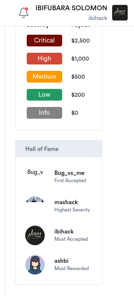
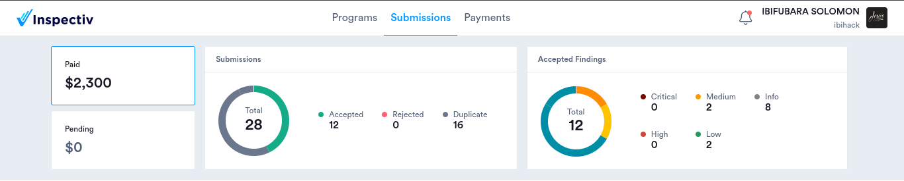
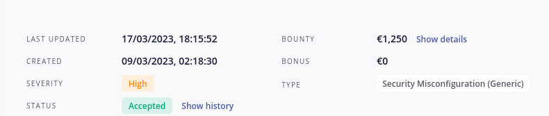

My name is Solomon Ibifubara Bernard, and I hold a Bachelor's degree in Electrical and Electronics Engineering. I am recognized for my ability to learn quickly and my unwavering commitment to my work. My fascination with computers led me to explore the field of Computer Technology during my academic years. In this journey, I have gained a fundamental understanding of programming languages such as Python, SQL, and Javascript. Intrigued by the vast domain of Networking, I delved into it before finally setting my sights on Cybersecurity. This required me to familiarize myself with the Linux operating system, which I did with great enthusiasm. After undertaking several courses in Cybersecurity, I discovered my passion for Web Application Security and decided to make it my primary focus. Applying the knowledge I had gained, I have successfully identified 30 bugs across 10 different global organizations, including several high and medium severity bugs. I am now eager to contribute my skills and knowledge to an organization that values growth and learning, as I continue to expand my expertise in this exciting field.
Hunting for bugs on an organization's web asset utilizing the Inspectiv platform, I achieved a significant milestone by being recognized in the Hall of Fame for the highest number of accepted bugs. This accolade underscores my commitment to excellence and my ability to identify and address software vulnerabilities effectively.
A significant portion of my work has been through the Inspectiv platform, where I’ve had the opportunity to discover and assist in mitigating a variety of intriguing bugs in numerous organization’s software. This experience has not only honed my skills but also contributed to enhancing the security of these software systems.
I recently uncovered my most intriguing bug yet on a program hosted on Intigriti. This discovery allowed me to gain control over the account of any user on an organization’s website asset. It was a significant breakthrough in my cybersecurity journey, highlighting the importance of diligent exploration and persistent effort in this field.
